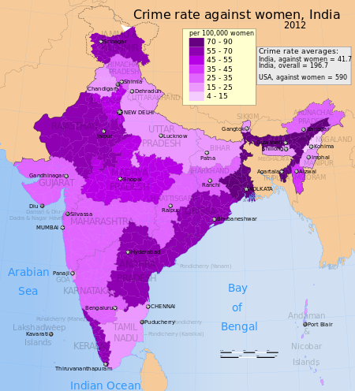
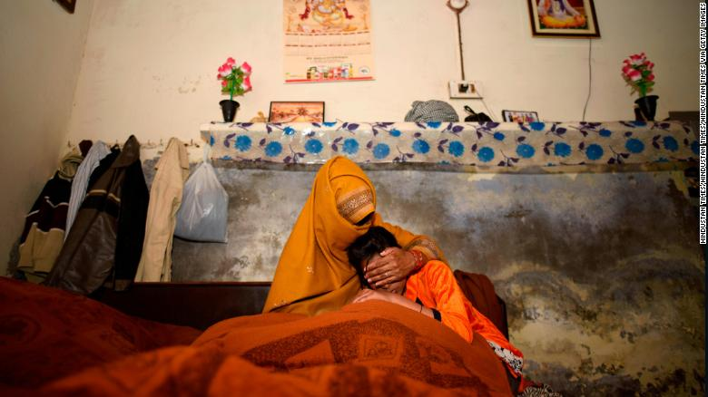

The Thomson Reuters Foundation released its results Tuesday of a survey of 550 experts on women's issues, finding India to be the most dangerous nation for sexual violence against women, as well as human trafficking for domestic work, forced labor, forced marriage and sexual slavery, among other reasons.Statistics show that every 2 minutes, a woman in India is victim of a crime.Despite being an up and coming nation in terms of global impact, India still lags behind when it comes to gender equality. Violence against women is a common problem that, unfortunately, is not taken seriously by authorities and, as a result, cannot be addressed effectively. 
Violence against women is prevalent throughout the country
Reasons why women are abused in India
Sometimes considered a hate crime, this type of violence is gender-based, meaning that the acts of violence are
committed against women and girls expressly because they are female. The UN Declaration on the Elimination
of Violence Against Women states,
violence against women is a manifestation of historically unequal power relations between men and women"
and "violence against women is one of the crucial social mechanisms by which women are forced into a
subordinate position compared with men.
Furthermore, this unequal power dynamic is perpetuated by
the lack of awareness and response to this issue. In short, it is a cycle: violence against women that is
not met with consequences only continues.
In December 2012, Nirbhaya was beaten with iron rods, gang-raped, and tortured in a private bus while she was travelling with her boyfriend.Many incidents like this continue to occur throughout India yet large numbers of women choose not to report incidents like this one because they either do not trust the police, or the police are not actually registering the cases. As a result of this negligence, women do not feel safe, even within institutions of security. 
The mother and young sister of a 15 year old whose brutal rape and murder in Haryana has shocked India
Women cover their mouths in a 2013 protest against rape in Guwahati, India.
Take a look at this issue using virtual reality
Instructions: use a QR code scanner to scan this image. Then place your phone into the VR glasses. Do not use if prone to headaches.
Description:
Crowded street markets are a common place where women face different forms of violence including sexual harassment”
http://sayfty.com/
http://www.womenonwings.com
http://apneaap.org/
https://cdn.cnn.com/cnnnext/dam/assets/130827122557-india-rape-protests-exlarge-169.jpg
https://cdn.cnn.com/cnnnext/dam/assets/180119122928-haryana-exlarge-169.jpg
https://goo.gl/rLYVdu
https://goo.gl/hveoeC
https://goo.gl/rdr26e
https://i0.wp.com/s3.amazonaws.com/hoth.bizango/images/128978/logo_violebce3_feature.jpeg
https://cdn.cnn.com/cnnnext/dam/assets/170122145426-womens-march-india-0121-medium-plus-169.jpeg